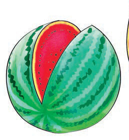
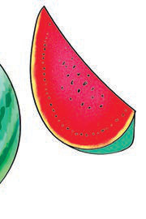

tikiti

tikiti
kiti
11. Soma habari hii:
Atiki ana tikiti. Atiki anakata tikiti. Atiki anakula tikiti. Atu anatamani tikiti. Atiki anamkatia Atu tikiti. Atu anakula tikiti.


Atiki ana tikiti. Atiki anakata tikiti. Atiki anakula tikiti. Atu anatamani tikiti. Atiki anamkatia Atu tikiti. Atu anakula tikiti.